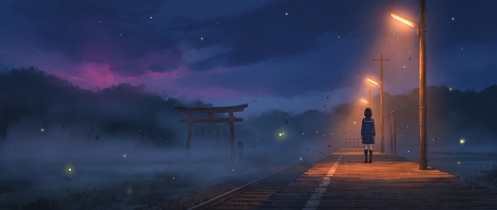
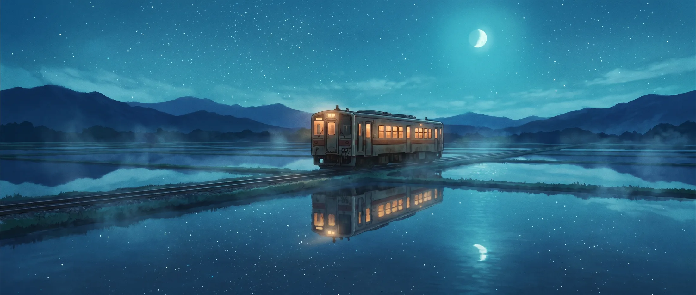
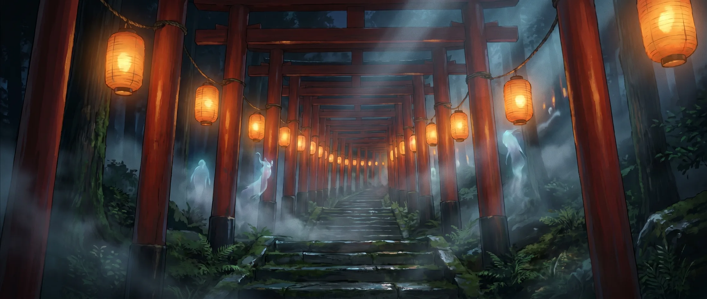
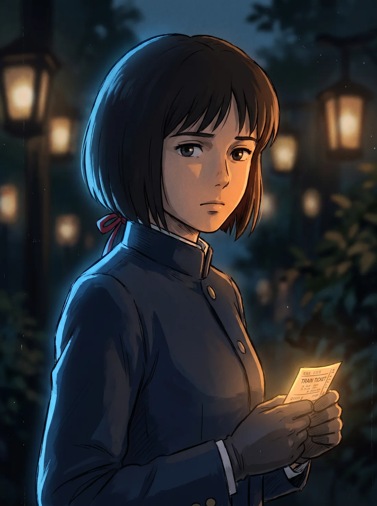
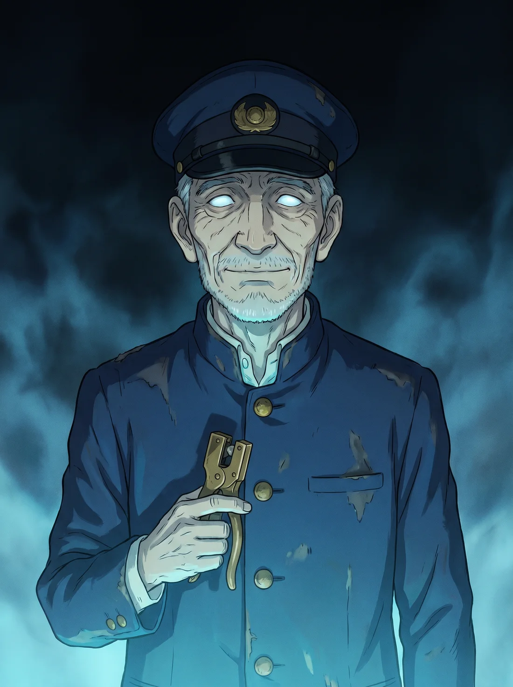
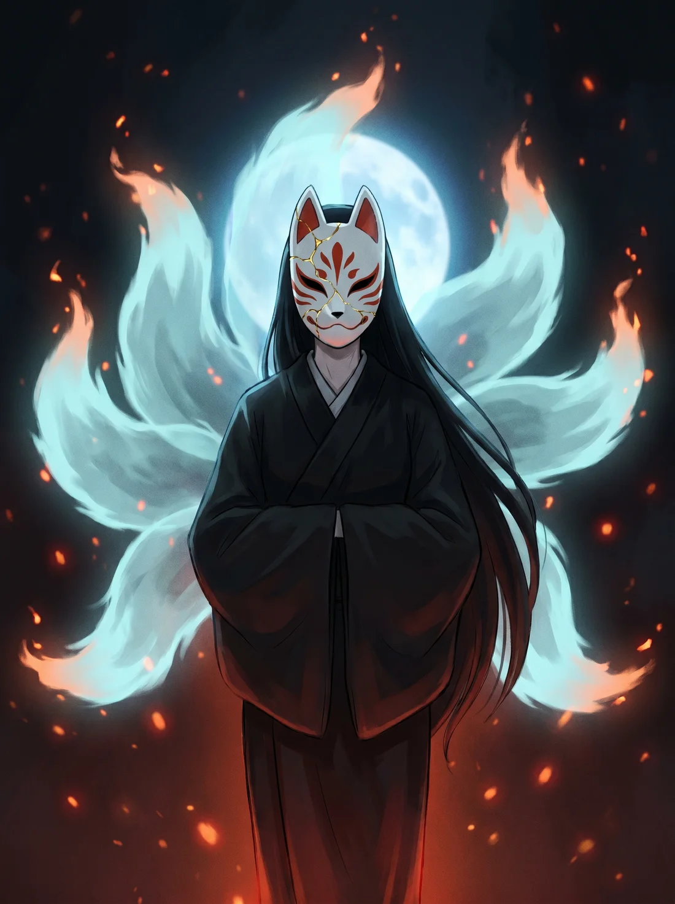

01
The Platform
Dusk, somewhere north of Nagano. The 23:47 is nine minutes late, and it has never been late before.
A KUROSAWA ANIMATION STUDIO FILM
The last train doesn’t stop here.
Every night at 23:47, a train that is not on any timetable pulls into a station that is not on any map.
Hana Amamiya has ridden the last service home for three years. She has never once noticed the extra carriage at the back — unlit, unnumbered, its doors opening for no one. Until the night she does.
The conductor punches her ticket without looking up. Beyond the window the rice fields go on forever, and the stars are underneath the water. He tells her, gently, that there is only one stop remaining, and that nobody has ever got back on.

Dusk, somewhere north of Nagano. The 23:47 is nine minutes late, and it has never been late before.

The water holds the whole sky. For eleven minutes the carriage travels through nothing at all.

A thousand gates and a thousand lanterns, and every one of them lit for a passenger who never arrived.
“You may keep the ticket.
— The Conductor
It is the only thing
that still belongs to you.”

Seventeen. Punctual to a fault. Carries a ticket she does not remember buying.

Has worked this line for longer than the line has existed. Never looks up. Never lies.

Waits at the final gate. Collects what the ticket was worth. Has been waiting a very long time.
Teaser one · 0:05 · Silent · No dialogue